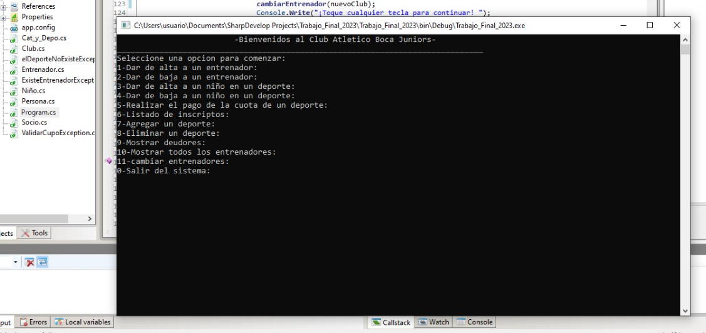

Sistema de Recomendacion y análisis de restaurantes en California
Se desarrollo un análisis de datos extraidos de Google Maps y Yelp, para desarrollar un profundo análisis del mercado gastronómico basado en las reseñas de los usuarios sobre diferentes negocios. Posteriormente, el desarrollo de dos Modelos Predictivos, y visualización de datos a través de un dashboard interactivo.


Modelo de recomendacion de Peliculas
Creación de un modelo de Machine Learning que consta de un sistema de recomendación de peliculas. Se abarco desde una limpieza de los datos hasta el deploy del modelo junto con 6 funciones más en render.

Analisis de conexiones de Internet en Argentina - ENACOM
En este proyecto me centre en realizar un análisis exhaustivo que aborda el acceso a internet en Argentina, medido por provincia y nacionalidad, además de ingresos con el valor del dólar. Los datos se obtienen de la página de ENACOM. Al final todo se puede visualizar en un dashboard interactivo

Interfaz en C#
Desarrollé un programa en C# que ofrece una interfaz intuitiva y eficiente para la organización de un club de deportes dedicado a niños. Este proyecto fue concebido para simplificar la gestión de actividades, inscripciones de participantes, programación de eventos y seguimiento de progreso dentro del club.
Este proyecto académico fue concebido para simplificar la gestión de actividades, inscripciones de participantes, programación de eventos y seguimiento de progreso dentro del club i contribución incluyó el diseño y desarrollo del software, garantizando su funcionamiento óptimo y adaptabilidad a las necesidades específicas del club y sus usuarios.